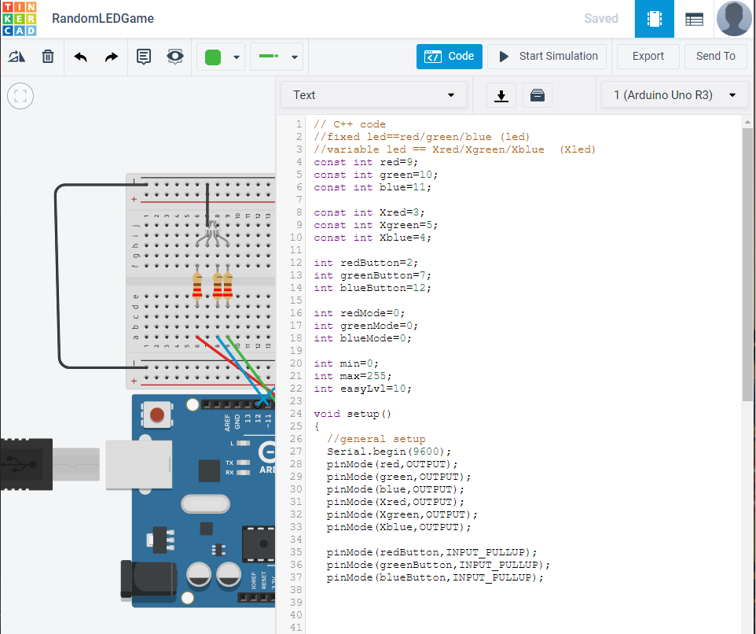

How to make LED Game yourself?
Click on each component to view its discription...
1 x Arduino Uno R3
2 x RGB LED
4 x Push Button
6 x 220 Ω Resistor
20 x Jumper Wire
Let's now talk about the main parts of our project. First, we have the Arduino Uno, which is like the big brain of our setup. It handles all the commands and decisions for the project. For example, if we want to turn on the lights, we tell Arduino, and it makes it happen. But it's not as simple as just saying it; we need to learn about some other components too.
Next, we have the RGB LEDs. The term RGB stands for Red, Green, and Blue, while LEDs are just small lights. You might have seen those colorful light strips on ceilings or in other places – those are made of RGB LEDs. The neat thing about these LEDs is that they can emit three different colors, and by adjusting how much of each color they emit, we can create all sorts of colors.
Then, we have the push buttons. You've probably used these before – they are those little buttons you press to do something, like on a remote control or a doorbell. In our project, we'll use them as input devices to control certain actions.
Lastly, we need some jumper wires. These are simply special wires that we use to connect the different components together. They work just like regular wires, but they are easier to plug and unplug, making it simple to connect everything properly.
So, to sum it up, our main components are the Arduino Uno, which is like the brain, the RGB LEDs that can make different colors, the push buttons for control, and the jumper wires to connect everything together. Understanding how these parts work together will help us create our project successfully.
Simulation and Code
Dont worry if you are still struck on one component, I promise you will get to know your components better as we make this project. It is really important to learn the function of each component. (Project is like a dish, and components are its spices, you gotta have the spices right to make the dish delicious.)
Let's get started now. Open up any simulation software, here I am using TinkerCAD. It is a great web based simulation, perfect for young engineers. Drag in all the necessary components mentioned above into your workspace.
After you have all your components added, take a look at the circuit diagram. Connect the components exactly how its shown in the diagram. (NOTE: Pin Number and Type matters, Position doesn't.)
You are more than 40% done, all you need now is to understand the code and upload it.

Learn Together
xyz